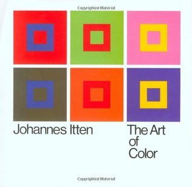

<!DOCTYPE html>
<html lang="en">

<head>
    <meta charset="UTF-8">
    <meta name="viewport" content="width=device-width, initial-scale=1.0">
    <title>Document</title>
    <script crossorigin src="https://unpkg.com/react@18/umd/react.development.js"></script>
    <script crossorigin src="https://unpkg.com/react-dom@18/umd/react-dom.development.js"></script>
    <script src="https://unpkg.com/@babel/standalone/babel.min.js"></script>
</head>

<body>
    <div id="main"></div>
    <script type="text/babel">
        let div = document.querySelector("#main");
        const root = ReactDOM.createRoot(div);

        let myStyle = {
            backgroundColor: 'PaleTurquoise',
            color: 'darkslategrey',
            fontFamily: 'Arial, Helvetica, sans-serif',
            width: '700px',
            padding: '20px',
        }

        let bookStyle = {
            display: 'flex',
        }

        let textStyle = {
            padding: '10px'
        }

        root.render(<div style={myStyle}>
            <div style={bookStyle}>
                <div id="photos">
                    </img>
                </div>
                <div id="text" style={textStyle}>
                    <h1>The art of color</h1>
                    <p>Johannes Itten</p>
                    <p>Nonfiction</p>
                    <p>160 pages</p>
                </div>
            </div>
            <div id="reviews">
                <h2>Reviews</h2>
                <p>"Itten's color explanations and exercises, followed and enlarged by his discussions of color in master paintings, helps to quantify both how colors are used and how they shape what we see, think, and feel. A book to supplement, not replace, an intuitive approach to color use, it both sharpens the eye and focuses attention."</p>
                <h5>Kerfe</h5>
                <p>"This book is required reading for any student of color theory. Itten's work opens the subject of color interaction to readers of all backgrounds, and gives the practicing artist an essential tool for understanding the role the color plays in design."</p>
                <h5>Russ Little</h5>
                <p>"From my point of view, this book can be useful in a way that gives you a new perspective on how to use colours, especially in paintings description there are some important points that I myself wasn't able to find out them before reading this book."</p>
                <h5>Fereshte</h5>
            </div>
        </div>)
    </script>
</body>

</html>
